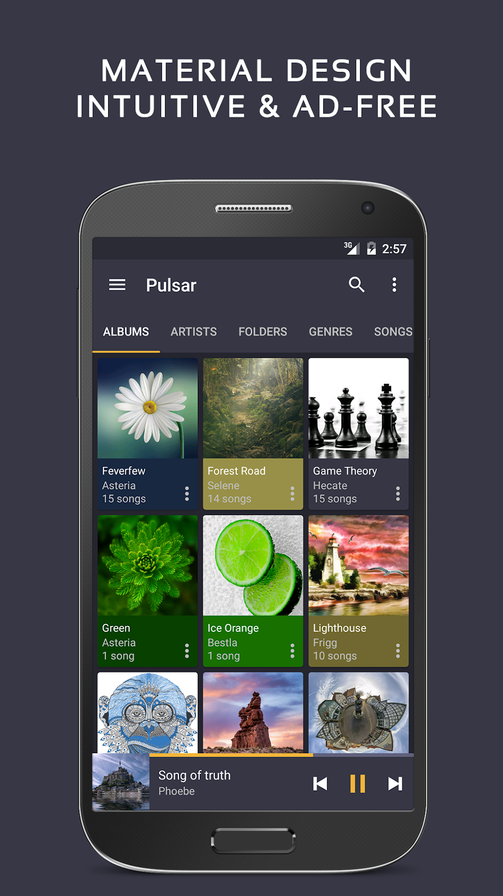

Pulsar 到底值不值得掏钱？一个重度用户的付费决策账本
免费版够用吗？Pro 版多出来的音效、标签编辑和定时功能每一分钱花得值不值？按使用强度拆账，三秒对号入座。
开头直接抛问题：它到底值不值得掏钱？
我用 Pulsar官网 这款播放器快三年了，从免费版一路用到 Pro。中间好几次反复——想省那十几块钱换回免费版，又因为某个小功能卡壳不得不退回来。后来索性坐下来把这笔账算清楚：哪些功能真在高频用、哪些 Pro 功能我从来没点开过、省下的那点钱换来了什么、又亏了什么。
如果你也在犹豫要不要掏钱，这篇就是给你写的——我不会说"Pro 版真香闭眼冲"，也不会说"免费版完全够用别花冤枉钱"，我只算三笔账：轻度用户、主力用户、重度用户各自的时间成本和钱花得值不值。
定价拆解：免费版给什么、Pro 版多什么
先把边界划清楚。免费版不是残废试用——它的核心播放、曲库组织、基础声音调校全都给了：
- 按艺术家、专辑、曲目、文件夹六个维度组织曲库，带排除文件夹挡铃声
- 声道平衡调整，ReplayGain 拉平歌与歌之间的响度差
- 系统级播放控制：通知栏、锁屏、桌面小部件
- Chromecast 投屏、定时关闭、标签编辑器（基础版）
Pro 版额外给的东西集中在三块：实时音效（均衡器、低音增强、混响预设）、高级标签编辑（批量改标签、内嵌封面写回）、定时与自动化增强（更灵活的定时触发条件）。还有一个隐形福利：Pro 版解锁所有主题和自定义样式，免费版只能用默认皮肤。
价格方面它买断制而非订阅，这点挺良心——一次性付费终身有效。安装包从官方下载拿就行，Pro 版通过 Google Play 内购解锁，不同地区汇率折算下来大约十几块人民币。

算账：分三类人算
轻度用户：每天听半小时以内，主要用通勤碎片
结论：免费版完全够用，一分钱别花。
轻度用户的核心诉求只有两个——能正常播、别出杂音。免费版把这两点做扎实了：声道平衡和 ReplayGain 都在免费版里，耳机偏音直接拉平衡，歌与歌之间响度差用 ReplayGain 解决，不需要 Pro 音效。曲库组织的基础能力也足够应付百来首歌的规模。
什么情况下轻度用户会觉得"要是有 Pro 就好了"？大概只有一种场景：耳机本身品质不错、想在地铁里用均衡器提一下低频盖住环境噪音。但这个需求一个月也碰不到几次，真犯不上为它买整个 Pro。
轻度用户的单位时间成本：0 元/小时。 省下的十几块钱够买一杯奶茶。
主力用户：每天听两小时以上，曲库三百到一千首
结论：值得掏钱，但可以等促销。
主力用户开始触及免费版的边界。最常见的触发点是实时音效——免费版没有均衡器，只能靠声道平移和 ReplayGain。如果你用的耳机是 Bose、索尼、B&W 这种有明显调音取向的，或者你有自己习惯的 EQ 曲线，免费版就卡壳了。我自己是个例子：用 B&W P5 听歌，低频量感明显欠，免费版拉平衡没用——平衡调的是左右声道比例，调不了频段分布。这时候 Pro 均衡器的 5 段调节和一组预设就能用上。
第二个触发点是标签批量编辑。曲库过三百首之后，手动一首一首改标签会疯掉——专辑名不一致、艺术家拼写差异、封面缺失。Pro 版的批量标签编辑器可以一次选中一组歌统一改字段，效率提升至少五倍。我当年整理 800 首歌的曲库，用免费版花了两个周末；如果有 Pro 批量编辑，预计半天搞定。
主力用户的单位时间成本：按每天 2 小时、Pro 版 15 块算，大约 0.1 元/小时。 这个价格在同类付费播放器里算非常低的——Poweramp 买断要贵好几倍，而且界面远不如 Pulsar 清爽。
重度用户：每天听四小时以上，曲库一千首以上 + 折腾党
结论：闭眼买，甚至可以买给朋友安利。
重度用户的痛点集中在两个地方：曲库治理的效率和音效的自由度。
先说曲库治理。曲库过一千首之后，"排除文件夹"挡铃声和通话录音这种功能你肯定已经开了，但更头痛的是——系统媒体库乱了怎么办？Pulsar 底层读的是安卓 MediaStore，系统媒体库如果张冠李戴（比如新歌和旧歌混在同一张专辑里），播放器里看起来也乱。Pro 版没有直接重建系统媒体库的按钮，但它的标签批量编辑 + 内嵌封面写回功能，让你可以在播放器里直接修好标签后同步回文件，下次系统媒体库重新扫描就正常了。我专门去Pulsar文档翻了一下才确认，这套闭环在免费版里做不到——免费版标签编辑器改的只是播放器内部的映射，不会写回音频文件本身。
再说音效。Pro 版的均衡器面板带了 5 段可调 + 多组预设（流行、摇滚、爵士、古典等），还有低音增强和混响。这些预设不是玩具级的一刀切——每组都有针对性调整，比如古典预设把低频削薄、中频拉高，乐器分离度明显好于默认。如果你有自己的 EQ 曲线，可以手动保存成自定义预设，下次切换耳机直接加载。我有三组预设对应三套耳机（B&W P5、AirPods Pro、Sony WH-1000XM4），切换不用重新拉滑块。

还有一个重度用户才会用到的细节：高级定时。免费版的定时关闭是"在 X 分钟后停止"，Pro 版可以设"当某张专辑播完停止"或"当正在播放的队列结束停止"。这个功能对睡前听白噪音的人太香了——白噪音通常是一张专辑，不想它播完后继续放下一张，Pro 版的条件触发直接解决。
重度用户的单位时间成本：按每天 4 小时、Pro 版 15 块算，大约 0.05 元/小时。 这钱花得比订阅任何音乐 App 的 VIP 都值——音乐 App 的 VIP 一个月就要十几块，一年一百多，还不让你管理本地曲库。
替代方案：不付这笔钱有什么别的路
实在不想掏钱，有三条路可走，但各有代价：
路一：换同类免费播放器。 Poweramp 免费版功能和 Pulsar 免费版差不多，界面更复杂一点；Musicolet 是完全免费无内购的，但没有 Chromecast 投屏、定时关闭这些 Pulsar 免费版已经有的功能。换播放器的代价是——你已经花时间整理好的曲库结构、排除文件夹设置、甚至桌面小部件的布局，全部要重来一次。这个时间成本我认为超过 Pro 版那十几块钱。
路二：忍受免费版的限制。 具体说就是：不调 EQ、手动一首一首改标签、定时关闭只在"30 分钟后"和"60 分钟后"二选一。这个方案对轻度用户完全可行，对主力用户看你的耐心——我当年在免费版硬扛了三个月的手动改标签，最后实在忍不了买了 Pro，买完当天就觉得"早知道早买"。
路三：等促销。 Pulsar 的 Pro 版偶尔会在 Google Play 上做限免活动，通常在年中或年底的促销季。代价是——你得一直盯着，而且不知道限免哪一天开始、持续多久。如果你不急着用 Pro 功能，可以等；如果你已经卡壳了，等促销只会让你在免费版多熬几天。
结论：三秒对号入座
最后给一张决策表，你往上套就行：
| 你的情况 | 要不要掏钱 | 原因 |
|---|---|---|
| 每天听 < 1 小时，曲库 < 200 首 | 别花 | 免费版覆盖全部核心需求 |
| 每天听 1~3 小时，曲库 200~800 首 | 值得等促销再买 | 主力用户开始触到免费版边界，但刚需程度还没到必须立刻掏钱 |
| 每天听 > 3 小时，曲库 > 800 首，或有折腾 EQ / 批量改标签的需求 | 闭眼买 | Pro 功能直接解决高频痛点，单位时间成本极低 |
我自己属于第三类——每天通勤两小时 + 睡前一小时，曲库超过 1200 首，三套耳机各有独立 EQ 预设。Pro 版买断十几块，我已经用了两年，摊下来每天不到两分钱。这笔账对我来说怎么算都划算。但话要说回来，如果你只是用手机自带播放器偶尔放点歌打发地铁时间，那 Pulsar 免费版甚至都可能有点"功能过剩"——更别提再花十几块买 Pro 了。
掏钱不掏钱，从来不是"Pro 好不好"的问题，是"你的使用强度配不配得上这笔钱"的问题。
补充一句：这套整理好的资料我分别同步到了 GitHub、Gitee、GitCode 三个地方，哪个能连上就用哪个，内容保持同步。